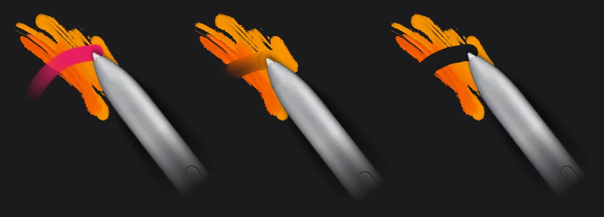

插画师的 Painter 工作流：从线稿到交付只用一个 App
自由插画师的完整交付链路——用 Painter 一个 App 搞定线稿、分层填色、厚涂渲染和缩时录像，少了桌面软件来回切换。
我每周要做的事
我是一个接概念设计外包的自由插画师。每个客户的需求都差不多：给一个主题 → 我出一张带底色渲染的概念稿 → 交付 PSD 源文件 → 附一张成品缩略图放他们的项目集里。
以前这套流程是这样的：Procreate 画线稿 → 导出 PNG → 桌面端 Photoshop 分层填色 → 导入笔刷包做厚涂渲染 → 屏幕录制软件开着录全程 → 手动剪辑把两小时作画加速到 30 秒 → 飞书发 PSD 给客户 → 小红书发成品加缩时。
一条链下来，我一天最多交两张稿，瓶颈不是画得慢，是软件来回切换和素材后期的零碎时间。
先从官方下载拿了个安装包装上试了一周，后来把 Painter 嵌进来做了替换，流程压成了这样：Painter 全程作画（线稿 + 分层填色 + 厚涂渲染）→ 自动缩时录像 → 一键导出 PSD + MP4 → 飞书发源文件 → 小红书直接用缩时素材发。
新流程里 Painter 的角色
Painter官网 在这条链里是"主作战场"——以前分散在 Procreate（线稿）和 PS（填色 + 渲染）两个 App 里的事，现在它一个搞定。上下游工具没换，只是中间那一大段被收进来了。
填色环节的替换：填充笔刷 + 图层引用
旧流程最烦的就是分层填色。线稿画完要进 PS，用魔棒或者套索一点一点勾选区，每勾一个色块新建一个图层，勾错了还要撤回重勾——一张概念稿少则五六个色块，多的十几个，光填色就要半小时。
Painter 里我换成了填充笔刷。它不是普通笔刷，是程序化的——你画一条闭合回路，首尾自动连起来，回路围成的区域立即被填充。配合图层引用功能，把线稿层设为参考层，填色在新图层上做，线稿本身一动不动。
具体怎么接：
- 线稿画在最下面的层
- 长按线稿层 → 选 Layer Reference
- 在上面新建一层，选 Solid Fill 填充笔刷
- 沿某块颜色的轮廓画一圈，松手就填满了
- 换颜色 → 换填充笔刷 → 下一块
一块色块平均两秒勾完，比 PS 魔棒还快。如果某个色块边缘不规则，用 Erase 模式加填充笔刷变成套索橡皮，画个圈擦掉多余部分就行——不用一点一点擦像素。
渲染环节的替换：油画丙烯笔刷
以前渲染阶段我习惯在 PS 里导入厚涂笔刷包，叠加好几层颜色做肌理。Painter 的油画丙烯笔刷直接省了这笔——它的厚涂感是模拟出来的，颜料在画布上堆叠，后续笔触不完全覆盖之前的，自然形成肌理。
流程里的衔接点：填色层都分好之后，在最上面新建一个渲染层，选油画笔刷，Paint 模式快速铺一层半透明的基调，然后切 Blend 模式在色块交界处扫，混色是在画布上自然发生的，不需要专门的调色工具。最后用小尺寸硬边油画笔刷点高光——和我在 PS 里的渲染手感几乎一样，只是不用导入笔刷包了。这些画笔参数的具体组合和调整选项，翻一下 Painter文档 就能找到，每种画笔的手感差异其实主要由三四个参数决定，调明白了和 PS 里导入的厚涂笔刷差别不大。

素材生产环节的替换：自动缩时录像
旧流程的另一个痛点是缩时素材。以前要开屏幕录像软件手动点"开始"，画完点"结束"，然后剪进 PR 里加速、加 BGM、导出——这一套至少 15 分钟，而且屏幕录像文件大，两小时 1080p 就 1GB 了。
Painter 的缩时录像默认自动开，从新建项目到导出全程录，不需要你管。画完在 Options 面板选 Time-Lapse 导出，参数设成我常用的：速度 100x（两小时作画约 72 秒视频）、分辨率降采样到 1080p、格式 MP4、质量高。导出的 MP4 一般 10~30MB，直接拖去小红书后台上传，不用再处理。少了手动录制、手动剪辑、手动导出这三步。

容易断链的两个环节
流程跑通了，但有两个地方我踩过坑。
第一个是填充笔刷和 Clip 裁剪的配合。一开始我填完色直接在同一层上做纹理效果，结果纹理溢出到了色块外面。后来才发现应该把填充笔刷层作为裁剪基底——在填充层上面新建纹理层，长按 → Clip，这样纹理只会留在填充区域内，不会超出边界。这一步如果忘了，整张图的肌理就乱了。
第二个是缩时录像的边界。Painter 的缩时只记录它自己内部的操作——如果你在 Painter 里画了一半，导出 PSD 去电脑上用 PS 继续编辑，那部分不会被录进去。我有一次忘了这个，中途改了个小细节在电脑上补，结果缩时里那段缺失了，素材没法用。现在我要么全部在 Painter 里搞定，要么中途不碰其他软件，等 Painter 里的导出完再做后期微调。
效果和边界
跑了三周这套流程，实际变化：每张稿的作画加后期时间从 4 小时压到 2.5 小时，主要省在填色和素材生产环节；少了两次手动软件切换，每次切换加起来约 15 分钟；缩时素材从"偶尔做"变成了"每张都有"，小红书账号周更频率从 2 篇涨到 5 篇。
这套流程什么时候不划算？如果客户的需求是纯线稿，或者需要桌面端 PS 独有的滤镜、字体、排版功能，那 Painter 反而多了导出这一步。不过我接的大部分概念稿都是线稿加底色渲染，Painter 一套走下来刚好。还有 PRO 功能的问题——调整层、滤镜层、文字层这些是付费解锁的，免费版用户能用到的就是位图层、填充笔刷和油画笔刷，基本够用，但如果客户要求复杂的非破坏性调整，还是得导出到桌面端。
总的来说，Painter 在我的工作流里相当于把 Procreate（线稿）和 PS（填色渲染）两个环节合并成了一个，加上自带的缩时录像解决了素材生产的问题。上下游工具没动，只是中间那段从多个 App 串起来变成了一个 App 搞定。它的定位就是移动端概念设计交付链路里的核心节点——上手成本不高，但替换进去之后整条链的效率变化是可数的。想把自己的作画流程也收一收，先拿个安装包装上试试，去它的产品页看一眼导出格式和缩时参数——这两项是决定能不能插进你现有工作流的关键。关于画笔参数和图层操作的完整参考资料，我在 GitHub、Gitee 和 GitCode 三个仓库都同步维护，国内用户走后两者加载更快，内容是逐字对齐的。